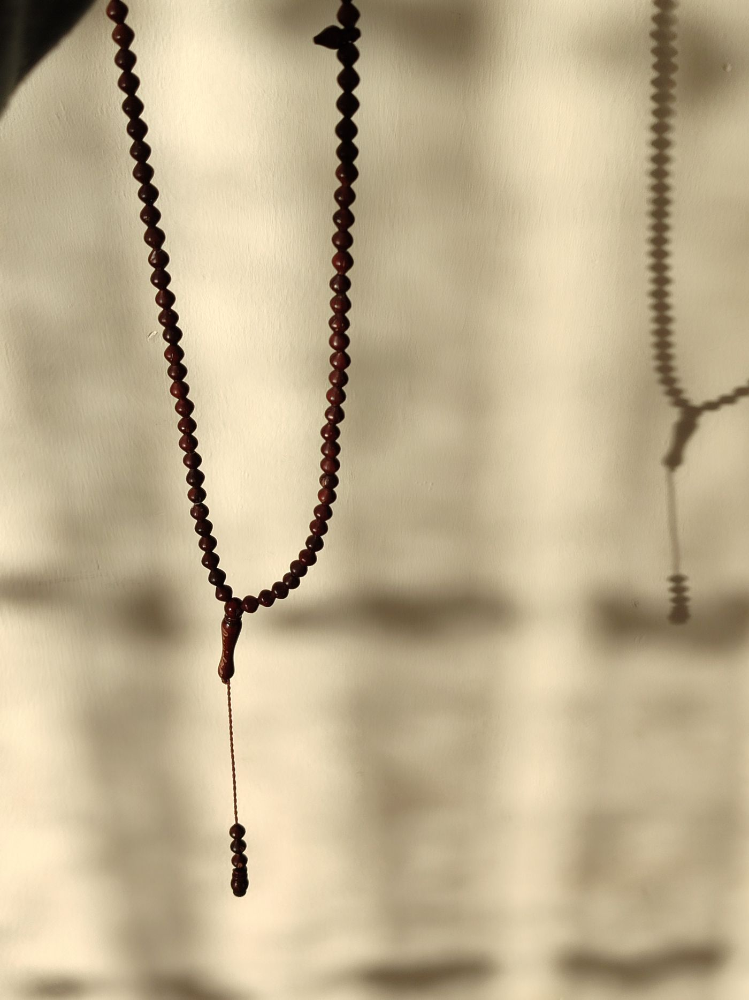

お仏壇の種類や大きさ、ご予算、お部屋との相性など、
選び方がわからない方もご安心ください。
店頭で実物をご覧いただきながら、ていねいにご案内いたします。

KIN-BUTSUDAN金仏壇
木地に漆を塗り重ね、内部に金箔を施した伝統的なお仏壇です。浄土真宗のご家庭で多く用いられ、極楽浄土の荘厳さを表しています。
宗派（本願寺派・大谷派など）により形が異なりますので、ご宗派をお知らせください。
価格の目安 30万円〜

KARAKI-BUTSUDAN唐木仏壇
黒檀・紫檀・欅など、木目の美しい銘木を用いたお仏壇です。落ち着いた風合いで、宗派を問わずお使いいただけます。
年月とともに深まる艶も魅力のひとつです。
価格の目安 15万円〜

MODERNモダン仏壇（家具調仏壇）
洋間やマンションのリビングにもなじむ、家具のようなデザインのお仏壇です。上置きタイプなど、限られたスペースに置ける小型のものも豊富にございます。
価格の目安 5万円〜

BUTSUGUお位牌・念珠・仏具
お位牌は、ご注文から文字彫りまで約二週間でお仕上げします。四十九日に間に合わせたい場合は、お早めにご相談ください。
念珠、香炉・花立・燭台などの仏具、日々お使いいただくお線香・ろうそくも取り揃えております。
お位牌 2万円〜 ／ 念珠 3,000円〜
FAQよくあるご質問
宗派がわからないのですが、選べますか？
お寺さまのお名前がわかれば、こちらでお調べすることもできます。唐木仏壇やモダン仏壇は宗派を問わずお使いいただけます。
古いお仏壇の引き取りはできますか？
はい、お引き取りと閉眼供養（魂抜き）のご相談も承っております。
配達・設置はしてもらえますか？
〇〇市内は無料でお届け・設置いたします。市外の方もお気軽にご相談ください。